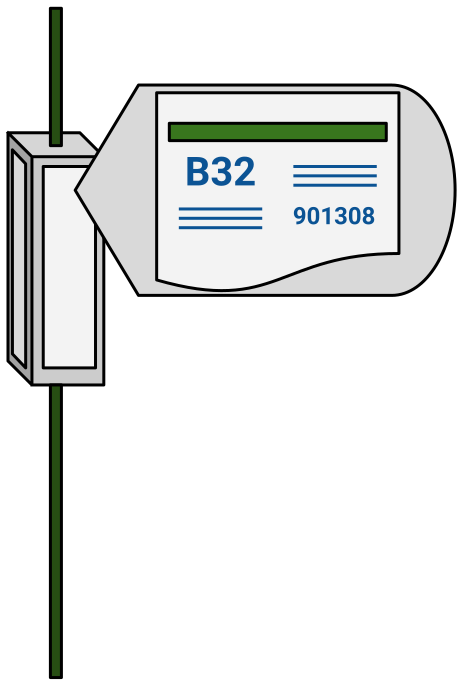

The MTA had recently released an Official MTA App, but unfortunately, like most things MTA, it was slow and unreliable. In my pursuit for something better, I resorted to reading the paper bus schedules posted on bus stop pole boxes. Printed alongside the timetables, are instructions for how to use MTA’s real-time bus tracking service via SMS. You text the bus stop code to 551-123, and it quickly texts you back real-time data!
Not only was this service the best way that I’ve found to get real-time bus data, I found the idea of these little secret codes, fascinating.

I decided that a real-time bus tracking webapp was product that I wanted to see exist in this World.
I’d call it Bobby, and it would be my opportunity to experiment with the product ownership research I had been doing. Some of that research included listening to Justin Searls’ talk, The Selfish Programmer, which is about how to approach solo work differently than the way we approach our work, at work—which is often on teams. It caused me to reflect on how I often get in my own way when I have an idea for a new project. I wrote about this a bit in my blog post, The Burden of Self Imposed Bureaucracy.
I was also inspired by reading It Doesn’t Have to be Crazy at Work by DHH and Jason Fried at Basecamp. In their book, they present their ideas about how to run a better—calmer—business. Even though I wasn’t going into business, a lot of what they wrote about complimented product ownership and healthy working habits, in general.
Even though it’s a webapp, it was important that Bobby be mobile-first. This meant that the user experience was designed to be similar to that of other mobile-first/native applications.
For Bobby, this manifested as large buttons, big fonts, and, of course, spawning the correct mobile keyboard.
As of version 0.0.2, Bobby is a Ruby on Rails app deployed on Heroku. When a user enters a bus stop code, Bobby sends a request to the MTA Bus Time JSON API. After parsing the response, Bobby displays the results in a human-readable format.
Later versions of Bobby utilize Stimulus for font-end validations and leverage browser caching to remember users’ recent and favorite bus stop codes.
As an experiment, Bobby is the first Innocent App I’ve built in an effort to refine how I approach bringing my ideas to life. Even though it’s not driven by the same motives as most real products, building Bobby gave me the opportunity to own something real—from design to development and from branding to user-testing.
The approach of using bus stop codes, rather than GPS, is intentional. Bus stop codes are an interesting analog solution to identifying someone’s location. Forcing a user to have a less-than convenient experience is part of the experiment of Bobby: how can we make technology simpler and put users back into their environment? The experience of finding bus stop codes on bus stop signs is fun for me; it’s a melding of old and new. Besides, what else would I do while waiting for a bus, check Twitter?